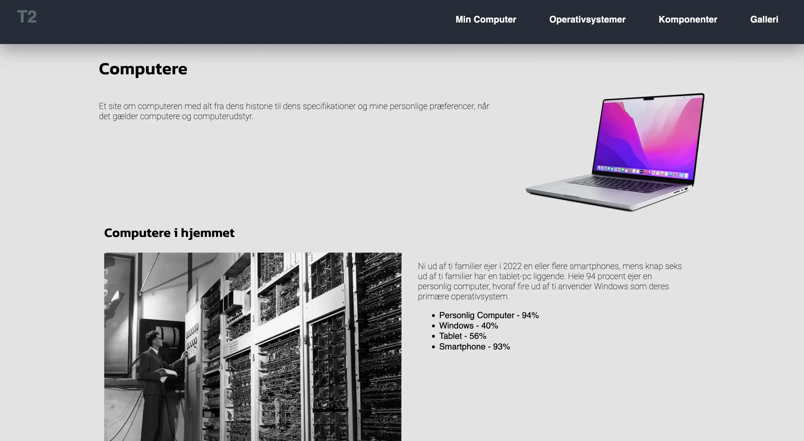

TESTGrundlæggende Web
Introduktion
I dette tema blev jeg introduceret til kodningssprogene HTML og CSS. Jeg lærte at bruge Visual Studio som redigeringsværktøj og FileZilla til at overføre filer til mit website. I dette tema lærte jeg også om brugen samt vigtigheden af korrekt stuktur på mapperne, og at holde styr på sine ting, inden man uploader. Dette blev anvendt i min studiestartsprøve, hvor jeg implementerede allerede produceret indhold, herunder tekst og billeder om computere på et website.
